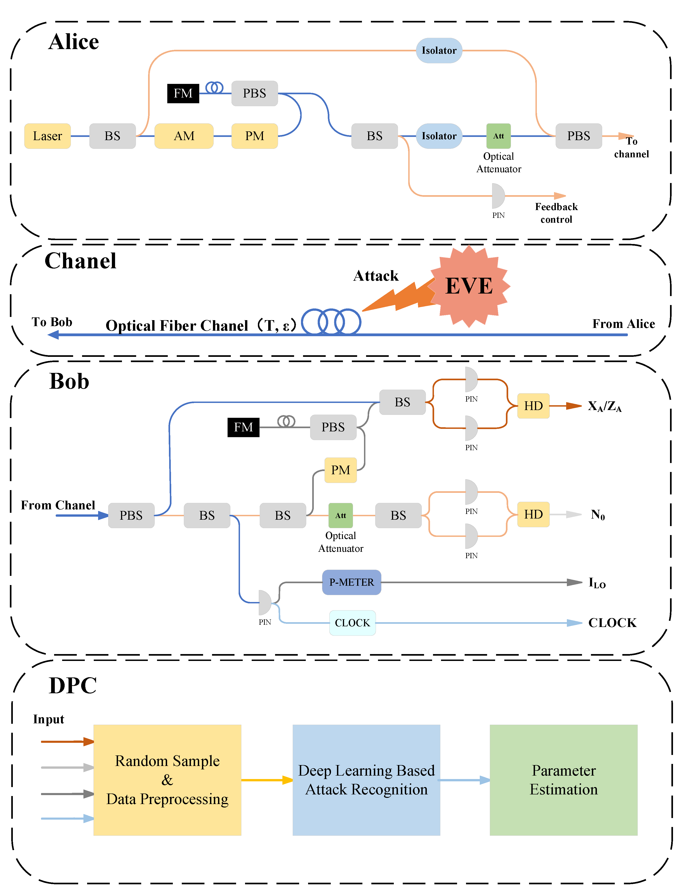

2. Známé typy útoků
2.1 Útok rozdělením počtu fotonů (PNS Attack)
Toto je nejznámější slabina reálných implementací. Ideální QKD vyžaduje zdroj, který vysílá vždy přesně jeden foton. Reálné lasery jsou však tlumené a statisticky se stává, že v jednom pulzu vyšlou dva nebo více fotonů se stejnou informací.
- Princip útoku: Útočník (Eve) si v optickém vlákně jeden nadbytečný foton "odčerpá" a změří ho, zatímco druhý foton nechá nerušeně pokračovat k Bobovi.
- Důsledek: Bob a Alice nezjistí žádnou chybovost, ale Eve přesto zná část klíče.
- Obrana: Používá se vylepšený protokol s tzv. návnadovými stavy (Decoy States), které tento útok odhalí.
2.2 Útok Trojského koně
Tento útok cílí na koncová zařízení Alice nebo Boba. Útočník posvítí silným světelným zdrojem přes optické vlákno přímo do zařízení odesílatele.
- Princip: Světlo se odrazí od vnitřních komponent (např. fázových modulátorů) a vrátí se zpět k útočníkovi. Z analýzy odraženého světla může útočník zjistit, jak byla zrovna nastavena báze pro kódování, aniž by musel měřit samotný letící foton.
- Obrana: Instalace optických izolátorů a filtrů, které propouští světlo pouze jedním směrem.
2.3 Denial of service
Kvantová komunikace je extrémně citlivá na rušení. Útočníkovi stačí do vlákna pustit silný šum, nebo vlákno fyzicky mírně ohnout. Detekce chybovosti okamžitě stoupne nad povolenou mez a systém bezpečnostně ukončí spojení. Ačkoliv nedojde k úniku dat, komunikace je znemožněna.
Schéma fyzického útoku na optický kanál a jeho následná detekce.
2.2 Postkvantová Kryptografie (PQC)
PQC je soubor nových algoritmů (např. založených na mřížkách), které běží na klasických počítačích, ale jsou odolné proti kvantovým útokům. Cílem je zajistit plynulou migraci klíčových infrastruktur do doby, než bude QKD nasazena globálně.
Porovnání klíčových PQC algoritmů (Vlastní příspěvek)
| Algoritmus (NIST Standard) | Typ použití | Založeno na (Matematická báze) | Velikost veřejného klíče (přibližně) |
|---|---|---|---|
| CRYSTALS-Kyber | Záměna klíčů (KEM) / Šifrování | Moduly mřížky (Lattices) | 1.2 KB |
| CRYSTALS-Dilithium | Digitální podpis (DS) | Moduly mřížky (Lattices) | 1.3 KB |
2.3 Vlastní názor na téma
Domníváme se, že bezpečná migrace vyžaduje **hybridní kryptografii** – kombinaci QKD pro vysokou bezpečnost na krátké vzdálenosti a PQC pro globální, masově nasaditelné digitální služby, jako je webová komunikace a digitální podpisy. Závod mezi vývojem kvantových počítačů a standardizací PQC je závod s časem.